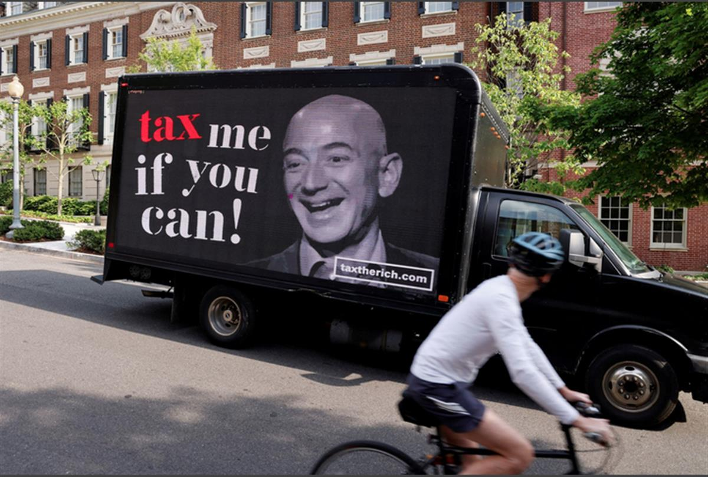
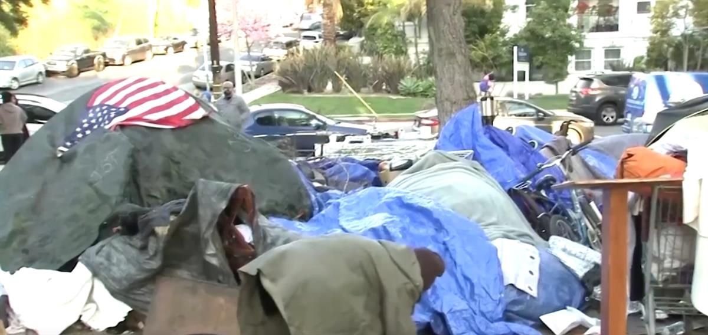

January 19, 20229:54 AM GMTLast Updated a day ago
Millionaires group calls for wealth tax at virtual Davos
By Brenna Hughes Neghaiwi and Simon Jessop
-
Summary
-
'Patriotic Millionaires' group issues open letter
- Says rich should pay more for COVID recovery
- 10 richest individuals made $1.5 trillion over 2 years
ZURICH, Jan 19 (Reuters) - A group of more than 100 billionaires and millionaires has issued a plea to political and business leaders convening virtually for the World Economic Forum: make us pay more tax.
The group calling itself the 'Patriotic Millionaires' said that the ultra-wealthy were not currently being forced to pay their share of the global economic recovery from the pandemic.
'As millionaires, we know that the current tax system is not fair. Most of us can say that, while the world has gone through an immense amount of suffering in the last two years, we have actually seen our wealth rise during the pandemic - yet few if any of us can honestly say that we pay our fair share in taxes,' the signatories said in an open letter, published on the occasion of the World Economic Forum's 'virtual Davos', which began on Jan. 17.
Reuters reported last year on the staggering rise in billionaires' wealth in 2020, as the world went into lockdown and the global economy faced its worst recession since World War Two, prompting the millionaires' group to call for higher taxes.
While that spurred more than 130 countries to agree a deal to ensure big companies pay a global minimum tax rate of 15%, aimed at making it harder for them to avoid taxation, the millionaires said the wealthy still needed to contribute more.
Over the course of the two years of the pandemic, the fortunes of the world's 10 richest individuals have risen to $1.5 trillion - or by $15,000 a second - a study by Oxfam this week showed.


Members of the Patriotic Millionaires hold a federal tax filing day protest outside the apartment of Amazon founder Jeff Bezos, to demand he pay his fair share of taxes, in New York City, U.S., May 17, 2021. REUTERS/Brendan McDermid/File Photo
'PART OF THE PROBLEM'
In the letter, the signatories including Disney heiress Abigail Disney and venture capitalist Nick Hanauer told Davos participants convening for a week of online power-brokering and talks: 'You're not going to find the answer in a private forum... you're part of the problem.'
A spokesperson for the World Economic Forum said paying a fair share of taxes was one of the forum's tenets, and a wealth tax -as exists in Switzerland, where the organisation is based -could be a good model to deploy elsewhere.
In most countries outside a handful in Europe and some recent joiners in South America, the rich do not have to pay annual taxes on assets such as real estate, stocks or artwork, because they are taxed only when the asset is sold.
According to a study conducted by the Patriotic Millionaires together with Oxfam and other non-profits, a progressive wealth tax starting at 2% for those with more than $5 million and rising to 5% for billionaires could raise $2.52 trillion, enough globally to lift 2.3 billion people out of poverty and guarantee healthcare and social protection for individuals living in lower income countries.
The World Bank in 2021 published an article urging countries to consider a wealth tax to help reduce inequality, replenish state coffers depleted by COVID-19 relief schemes and regain social trust.
However, outside Argentina and Colombia, no new wealth tax schemes have been initiated since the start of the pandemic.
SOURCE: REUTERS
